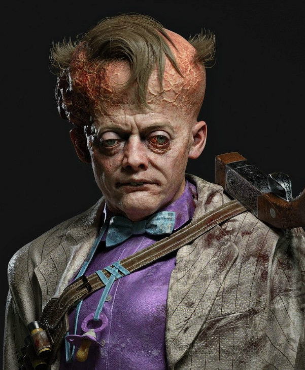

Франко Барби
Главный актив | Экс-поп
Локация: Пристань, Центр города, Пригород
Оружие: Лупара (обрез)
Франко Барби (ориг. Franco Barbi) — антагонист игры The Outlast Trials, гангстер и извращённый сын мафиозного дона, один из экс-попов и главный актив на объекте Синьяла, в корпорации Меркофф.
Биография
Франко Барби родился с дефектом развития черепа, в семье дона криминальной семьи Мартино в Луизиане, а свою умершую биологическую мать он никогда не знал, поскольку она была убита его отцом Сальваторе Барби. Франко был единственным ребёнком в семье, где он постоянно был свидетелем появления новых жён своего отца. С самого детства Франко был вовлечён в криминал, и первое своё убийство он совершил в 12 лет.
Вскоре он становится наёмным убийцей и собирателем долгов, также иногда совершая несвязанные с работой убийства. Франко Барби неоднократно задерживался полицией из-за нападений, сексуальных домогательств, приставаний и нарушений общественного порядка. Однако несмотря на все эти преступления, скорее всего из-за влиятельности своего отца, Барби никогда не был осуждён.
Вскоре Франко связывается с ЦРУ, приступив выполнять для них различные поручения. На Кубе Барби участвовал в рейдах, повлекших за собой десятки жертв. В Новом Орлеане он также совершал многочисленные убийства, никак несвязанные с ЦРУ, за что и был впоследствии исключён.
В сентябре 1959 года один из освобождённых реагентов из объекта Синьяла совершает убийство в кубинской Гаване, и Франко удалось стать свидетелем этого преступления. Вдохновлённый этим, он также убивает 7 человек, чем привлекает на себя внимания сотрудников корпорации Меркофф, которые видели в нём кандидата на роль нового главного актива в проекте «Тенева 2».
В конце концов агенты Меркофф находят Франко Барби, и соблюдая осторожность, нейтрализуют его и доставляют на объект Синьяла в Аризоне, чтобы превратить в нового главного актива. Лишь в марте 1960 года ещё больше обезумевший Франко Барби стал полноценным главным активом на испытаниях.
The Outlast Trials
Франко Барби является главным активом на испытательных полигонах «Пристань», «Центр города» и «Пригород». Там главный актив противостоял реагентам, и в этом ему помогали другие агрессивные экс-попы. Безумцы патрулировали зону испытаний, стараясь выследить и кровожадно убить любого реагента, который попадётся им на глаза. Безумный и озабоченный гангстер бегал по территории, вооружившись любимой лупарой, которой он любил убивать реагентов и других пленников.
На полигоне «Пристань» основным испытанием было «Отравите лекарство», а также у него присутствовали мк-стимуляции «Отравите скот», «Опустошите хранилище», «Спрячьте контрабанду» и «Распространите болезнь».
На полигоне «Центр города» основным испытанием было «Порадуйте прокурора», а также у него присутствовали мк-стимуляции «Похитьте любовницу», «Распространите болезнь», «Развезите продукт».
На полигоне «Пригород» основным испытанием было «Ликвидируйте профсоюз», и мк-стимуляции «Соберите голоса», «Нанесите вред району», «Устранение устаревшего оборудования».
Франко Барби, также как и Лиланд Койл, и Матушка Гусберри, как помеха, может участвовать в протоколе освобождения реагентов на полигоне «Особняк», куда попадают испытуемые, которые в ходе испытаний якобы заработали шанс на свободу.
Галерея
Интересные мелочи
- Черты лица Барби и его увеличенный череп схожи с признаками, которые наблюдаются у людей с синдромом Пфайфера 1 типа.
- Ещё до его добавления в игру, затемнённое лицо Франко Барби было на телевизорах во временной программе «Самое главное» 2024 года.
- «Lupa» с итальянского означает «волк». Изначально доктор Хендрик Истерман посчитал, что речь идёт об увеличительном стекле, ссылаясь на испанский.
- У Франко есть несколько прозвищ: «Иль Бамбино», «Лупа», «Лупара» и «Оппортунист». «Il Bambino» с итальянского означает «ребёнок».
- Прозвище «Лупара» отсылает на одноимённый любимый обрез Франко, с которым он ходит абсолютно всегда. «Lupara» с итальянского означает «обрез».
- Изначально третьим главным активом планировался Прескотт Уайтхорн, но этот персонаж был отменён.